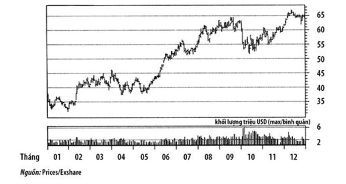

MỤC LỤC
CHƯƠNG NĂM
5.1.
Phình to
Không như vòng eo, lãi phình to là tốt cho bạn
VỚI BIẾN SỐ NÀY, giờ đây ta đang ở giữa đường trong danh sách tám biến số của chúng tôi. Biến số thứ tư là lãi kinh doanh phình to (operating margin expansion). Tôi thích chúng béo phì (tất nhiên là lãi kinh doanh). Tôi tập trung vào lãi kinh doanh, tức là thu nhập có được từ kinh doanh của một công ty chia cho doanh số ròng, một con số dễ dàng tính toán được và cũng có thể tìm thấy trên hầu hết các website tài chính như Yahoo!Finance. Tôi thích con số lãi kinh doanh hơn, bởi vì khó mà gian lận nó với những nguyên tắc kế toán được chấp nhận rộng rãi bây giờ, và nó cho tôi một cái nhìn rõ ràng hơn nhiều về việc công ty đó đang làm ăn ra sao so với những con số khác như thu nhập ròng (quá nhiều khoản mục không thường xuyên tìm được đường lòn vào thu nhập ròng nên khó có thể là một chuẩn so sánh đáng tin cậy). Nếu lãi kinh doanh của một công ty phình to từ năm này qua năm khác và từ quý này qua quý khác, thì nó chỉ ra rằng công ty đó đang làm ra nhiều tiền hơn trên mỗi USD doanh số mà công ty thu về từ những hàng hóa và dịch vụ mà họ bán ra. Thường thì chúng tôi tìm thấy những công ty có sự tăng trưởng doanh thu bột phát, nhưng lãi kinh doanh lại kém cỏi. Chẳng hạn, một công ty có thể hạ giá để kích thích doanh thu, nó sẽ làm đẹp cho dòng đầu tiên của báo cáo thu nhập (dòng ghi doanh số), nhưng nó không phản ánh sự tăng trưởng bền vững. Những công ty khác, đặc biệt là những công ty trong các ngành dịch vụ, có thể có doanh thu hàng đầu nhưng lợi nhuận có thể bị chén hết cho việc thuê thêm người và trả chi phí quảng cáo phụ thêm.
Lãi kinh doanh có thể cho thấy một sự tăng mạnh nhưng chỉ là tạm thời vì một vài lý do. Thứ nhất, công ty đó có thể cải thiện việc kiểm soát chi phí và cắt giảm chi tiêu để mỗi USD doanh thu sẽ mang về nhiều hơn một tý cho dòng cuối cùng của báo cáo thu nhập (dòng ghi lợi nhuận ròng). Nếu như thế thì thật là tuyệt, và tôi luôn vui mừng khi thấy những công ty mà tôi đầu tư có trách nhiệm với đồng tiền công ty của mình, nhưng cách này không phải là nguồn bền vững của tăng trưởng. Trong các dây chuyền bán lẻ ta thường thấy có các đỉnh lãi khi những cửa hàng có doanh số thấp bị đóng cửa. Lại một lần nữa, thật tốt khi thấy ban quản lý tiến hành những bước đi cần thiết để cải thiện cho dòng cuối cùng của báo cáo thu nhập, nhưng dẹp tiệm những cửa hàng thực ra không phải là cách để phát triển một công ty.
Một cách khác, lãi kinh doanh phình to là khi một công ty bán được nhiều hơn một thứ sản phẩm của nó, nhưng chi phí cơ bản của doanh nghiệp không tăng lên. Khi iPod của Apple được ưa chuộng đông đảo, sự gia tăng chi phí thực sự duy nhất mà họ thấy là chi phí để làm ra những đơn vị sản phẩm mới. SG&A (chi phí bán hàng, chi phí chung và chi phí quản lý - sales, general and administrative cost) nói chung của Apple không tăng nhanh ở bất cứ bộ phận nào, trong khi doanh thu và lãi kinh doanh của nó bùng nổ theo hướng tăng lên giống như cổ phiếu của nó vậy.
Trong Chương 1 tôi đã nói về tám nhân tố trong mô hình của chúng tôi, và chỉ ra từng nhân tố đã vượt trội hơn thị trường bao nhiêu trong vòng ba năm qua. Cải thiện lãi kinh doanh là một trong những biến số thành công nhất trong vài năm qua. Những công ty nào có thể làm phình to khối lượng tiền này trên mỗi đồng USD vốn sở hữu đều là những cổ phiếu chiến thắng. Vì trong mười năm qua năng suất đã được cải thiện ở Hoa Kỳ, với những tiến bộ khổng lồ trong công nghệ và công suất, là những thứ cũng được bành trướng bởi vì những sản phẩm mang tính chất đại chúng hiện giờ đã là tàu vũ trụ. Vì chắc chắn năng suất và công nghệ sẽ còn tiếp tục tăng lên trong những năm sắp tới (tôi là người lạc quan và tin rằng chúng ta đang có một tương lai tươi sáng), nên môi trường cho các cổ phiếu tăng trưởng nói riêng sẽ còn tiếp tục tồn tại.
Một trong những ví dụ tiêu biểu nhất về lãi kinh doanh phình to dẫn đến sự tăng giá của cổ phiếu tăng trưởng đến từ thế giới của lũ gà. Tyson Chicken trong nhiều năm trời chỉ là một hãng chế biến gà tầm thường. Họ mua gà con, nuôi cho lớn, vặt lông rồi bán chúng cho các nhà bán lẻ - một công việc làm ăn tươm tất cho dù đơn giản. Nhưng Tyson đã bắt đầu đổi mới và tìm ra những cách thức mới để bán thứ sản phẩm lâu đời của mình, và khởi sự đóng gói gà theo nhiều kiểu khác nhau. Họ bắt đầu bán gà đóng gói sẵn, ức gà rút xương để sẵn sàng làm món chả nướng, các món gà đông lạnh và nhiều thứ khác nữa. Họ nhận ra rằng họ có thể tính tiền nhiều hơn cho những thứ sản phẩm mà về cơ bản vẫn chỉ là những con gà đã vặt lông đó. Doanh thu và lãi kinh doanh tăng lên. Donald Tyson cũng nhận ra rằng khi nền kinh tế phục hồi từ sau sự đình đốn của thập niên 1970, người Mỹ cũng bắt đầu đi ăn ngoài tiệm thường xuyên hơn. Ông đã phát triển một chiến dịch vận động để bán sản phẩm của mình ở nơi mình đã từng được thưởng thức - trong các nhà hàng và các tiệm ăn nhanh. Một cuộc gọi tiếp thị đã thay đổi lịch sử của lũ gà. Tyson gọi cho tập đoàn McDonald và thuyết phục họ thêm món gà vào thực đơn - đặc biệt là một món mới gọi là gà McNuggets. Ý tưởng này được hoan nghênh, và nhờ việc cải tiến đổi mới sản xuất cùng những kỹ thuật marketing của Tyson, họ trở thành nhà chế biến gà duy nhất cung ứng món gà khoanh giăm bông (ruốc bông) và là nhà cung cấp chính của thứ sản phẩm mau chóng trở thành một trong những món bán chạy nhất trên thực đơn của McDonald. Họ thực sự có vị thế độc quyền về sản phẩm này và có khả năng để tính phí nhiều hơn mà không phải tăng thêm chi phí cơ bản của mình chút nào. Lãi kinh doanh phình to và cổ phiếu của công ty này bước vào một cuộc vui kéo dài nhiều năm liền, bay lên những đỉnh cao mới và xa hơn.
Tôi muốn đưa thêm nhiều ví dụ mới đây về từng biến số để các bạn có thể thấy mỗi biến số có sức mạnh như thế nào trong việc lựa chọn những cổ phiếu tăng trưởng đúng đắn. Một trong những ví dụ rõ ràng hơn trong vài năm vừa qua dĩ nhiên là những cổ phiếu năng lượng và dịch vụ năng lượng. Chi phí cơ bản để vận hành một doanh nghiệp năng lượng thực tế không thay đổi, nhưng những vấn đề địa chính trị và cung cấp đã đẩy giá cả loại sản phẩm này lên cao hơn. Những công ty này bán cùng một khối lượng khí và dầu, nhưng lãi kinh doanh lại cao hơn rất nhiều. Hình 5.1 cho thấy giá của cổ phiếu Suncor vào năm 2005. Lãi kinh doanh nhảy từ 20% lên hơn 50% doanh thu và giá cổ phiếu tăng lên 80%.

Hình 5.1. Bảng biểu diễn thành tích của Suncor năm 2005
Occidental Petroleum là một ví dụ tiêu biểu khác về tác động của giá bán cao đối với lãi kinh doanh và giá cổ phiếu. Tất cả những gì OXY làm là khai thác, sản xuất và bán dầu lửa. Từ năm 2003 đến 2005, không chỉ doanh thu của OXY tăng lên nhanh chóng, mà lãi kinh doanh cũng vậy vì chi phí kinh doanh vẫn tương đối ổn định. Lãi kinh doanh tăng lên qua mỗi năm và giá cổ phiếu của OXY cũng thế, tăng hơn 300% trong khoảng thời gian này. Một thứ khác cũng gia tăng nhanh chóng trong thời gian đó dĩ nhiên là giá trị của cải ròng của những người ý thức được sự phình to này.
Một ví dụ tuyệt vời khác đến từ thế giới video game. Hầu như không thể không nhận thấy sự bùng nổ của nó. Bạn có thể chơi các trò chơi trên computer, trên các máy chơi game chuyên dùng như Playstation 3, trên các thiết bị cầm tay, và thậm chí kể cả điện thoại di động của bạn. Sự tăng trưởng bùng nổ này có nghĩa là các nhà sản xuất cần các con chip xử lý đồ họa, những loại chip computer đặc biệt để làm cho trò chơi sống động, từ những trò chơi chiến đấu máu me cho tới những trò đụng độ mạnh như Madden Giải Bóng đá Mỹ và giải bóng rổ NBA đều rất được ưa chuộng. Nvidia ở đúng nơi đúng chỗ để cung cấp những con chip mà tất cả những nhà sản xuất game đều cần. Khi nhu cầu bùng nổ vào năm 2006, lãi kinh doanh của họ tăng gấp ba lần, cổ phiếu của họ cũng vậy, tăng hơn 100%.
Chúng tôi luôn để mắt đến lãi kinh doanh. Sự gia tăng lãi kinh doanh thường có nghĩa là công ty đó đang thống trị phạm vi kinh doanh của nó hay nó đang có một sản phẩm mới. Điều đó không tránh khỏi dẫn đến sự cạnh tranh và lãi kinh doanh bắt đầu giảm dần. Chúng tôi theo dõi sự suy giảm này rất cẩn thận và luôn để mắt đến sự tăng trưởng lãi này từ quý này sang quý khác.
Có rất nhiều lý do khiến cho lãi kinh doanh có thể ngừng phình ra và chẳng có lý do nào tốt cả. Có thể do huy động vốn quá đáng vì việc quản lý trở nên quá lỏng lẻo khi công ty còn đang say sưa thụ hưởng sự thành công (một cách tốt để trở thành cựu quản lý), hoặc có thể do việc tăng thêm những biện pháp điều tiết trong nhóm ngành như trong quá khứ đã từng diễn ra, chẳng hạn trong các ngành dược phẩm và phúc lợi. Cả hai ngành này đều chứng kiến lãi kinh doanh sút giảm mạnh khi các cơ quan chính phủ giới hạn những gì có thể tính phí cho các sản phẩm của doanh nghiệp và buộc họ phải thêm những biện pháp kiểm soát tốn kém đối với các nhà máy và xí nghiệp của mình. Cho dù lý do để lãi kinh doanh ngừng phình ra hay thậm chí bắt đầu sút giảm là gì đi nữa, thì đó vẫn là một dấu hiệu cho thấy sự tăng
trưởng đang chậm lại và đó có thể là lúc để nói lời chia tay với cổ phiếu này. Thật may là điều đó sẽ thể hiện trong mô hình dữ liệu của chúng tôi với rất nhiều sự cảnh báo. Trên website www.getrichwithgrowth.com , bạn có thể dễ dàng thấy khi nào thì điểm số cho lãi kinh doanh bắt đầu rớt xuống đối với hầu như bất kỳ cổ phiếu nào trên Wall Street. Bạn có thể dùng cái này như một sự cảnh báo sớm để bán đi trước khi cổ phiếu rớt giá.
Chừng nào lãi kinh doanh của một công ty còn phình ra, thì đó vẫn là một biến số mạnh làm cho giá cổ phiếu của công ty ngày càng lên cao.